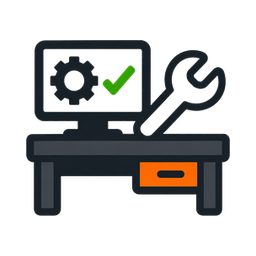

How to provision devices at the bench. Keep this open on the side screen.
Start Bench Tools.bat on the desktop.Every tool works the same way:
plug a device in → it's detected → configure it → unplug it → next one
Start Bench Tools.bat window open the whole time.192.168.88.x address. After that it will no longer
answer on the factory address — that's expected, it means the move worked.Radar opens on its own card; APU on another. Plug the unit in, then choose its channel and click configure. The tool sets the time and the device's permanent IP, then verifies it.
| Channel | Radar address | APU address |
|---|---|---|
| 0 | 192.168.88.50 | 192.168.88.60 |
| 1 | 192.168.88.51 | 192.168.88.61 |
| 2 | 192.168.88.52 | 192.168.88.62 |
| 3 | 192.168.88.53 | 192.168.88.63 |
Both skip a unit that briefly re-appears (so unplug each one), and both turn themselves off after 10 minutes with nothing plugged in — the page shows a message; just switch the mode back on to continue.
Plug the router in. The page reads it and asks for two things:
haifa-port. The device is named after it (otd-haifa-port / rut-haifa-port).Click Configure. The tool does everything else (password, name, time, firmware, RMS,
Tailscale, checks) and, for the RUTM08, moves the LAN to 192.168.88.1 as the last step.
192.168.88.1 address.A fresh camera answers on 192.168.1.123. Plug it in, then choose:
LAN or Cellular (ask which the job needs).Click Configure. The tool sets the password, imports the profile, sets the time, the ONVIF
login, and moves the camera to 192.168.88.<number> as the last step, then verifies it.
The speaker gets its address from DHCP, so there's nothing to type: plug it in and the tool finds it by itself (it scans the bench networks — this can take a few seconds longer than the other tools). When the page shows Speaker detected with its address, just click Configure.
The tool sets the password, the time server, uploads the announcement audio file, and
moves the speaker to 192.168.88.70 as the last step, then verifies it.
192.168.88.70), so finish and unplug one before connecting the next.The tool isn't up yet. On the first start of the day it's still installing — wait a minute and
it turns green. If it never turns green, close the black window and run
Start Bench Tools.bat again.
Wrong network for that device. Magos units use the 192.168.40.x port; Teltonika and
camera units use the 192.168.1.x port. Make sure it's the right cable/port, fully
seated, and the device has finished booting (give it ~30 seconds). Try once more before asking
for help. The speaker is different — it uses DHCP, so it just needs a port whose network
hands out addresses; give it up to a minute to get one after plugging in.
Read the message at the top — it usually says which step failed. Click Dismiss, leave the device plugged in, and click Configure again to retry. Steps that need internet (firmware, RMS, Tailscale) can fail if the SIM/uplink has no signal yet — wait a moment and retry.
That's normal. Most devices move to a new 192.168.88.x address as the last step, so
they stop answering on the address they shipped with. The green tick means it worked — unplug
and move on.
All tools stopped. Just double-click Start Bench Tools.bat again. (Closing a browser
tab is fine — the tools keep running; reopen the tab from the dashboard.)
Start Bench Tools.bat.